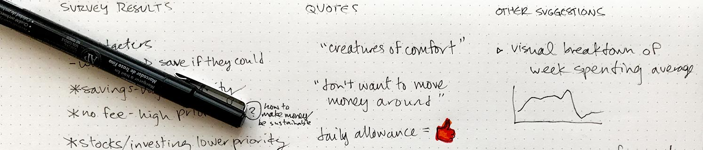
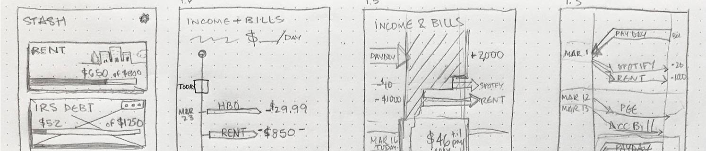
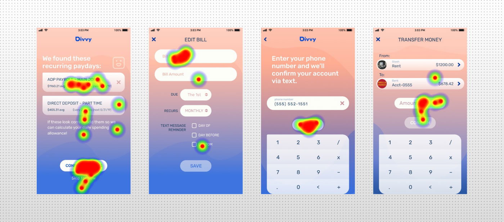

DIVVY
UX RESEARCH • BRANDING • PROTOTYPING • USABILITY TESTING
The simple money app that sets your daily spending allowance, stays on top of your bills, and helps you save with ease.
Rent is coming up, bills are due, and friends want to go out, but payday isn’t until next friday! Struggling to balance these finances can be destabilizing, and traditional budgets won’t help when you’re already too busy in the first place.
Divvy generates a Daily Savings Allowance giving users a simple and flexible spending guideline, instead of laboring over constricting budgets. With better control over their spending, users can stash away extra money for whatever they might need.
Follow the design process below!
RESEARCH
USER SURVEYS
Deployed a survey investigating how people manage their finances & budgeting, garnering 70 respondents. Found that 75% of respondents don’t consistently use a budget, citing too much work, inability to commit to a budget, or not having enough money in the first place.
90% would however use a budgeting/finance app if it worked for them, which would depend on ease of use and flexibility. Their predominant priorities were increasing their savings and avoiding overdraft fees. 81% of respondents thought a dollar-amount spending limit per day would be useful. The product could easily generate this number with some banking information, not requiring heavy user input the way a classical budget would.
of respondents don't consistently budget
of budgeters prefer their spreadsheet
think a daily dollar amount would help
The response trends and patterns called for a flexible and introductory money-management tool, based on a mobile device (these users are either on the go or don’t have a home computer). See the full survey, the responses, and analysis.
COMPETITIVE ANALYSIS
Products like Mint and You Need A Budget are widely-used financial tools, but they demand a high degrees of commitment and follow-through from their users, as well as familiarity with the budgeting concepts to get started. The respondents that cited lack of time, energy, motivation or discipline won't accomplish much with these tools.
Mint
- Widely known
- Combines all user accounts
- Slow syncing
- Doesn't learn from miscategorizations
You Need a Budget
- Boasts real success
- Demanding of time and energy
- Complex interface
- Text-heavy
However the app Qapital has simple savings features that would work well for many of the respondents. Cleo is an automated chatbot that works through Facebook messenger. It proactively takes the driver’s seat and prompts the users into action, who can react at their leisure or not at all. The target demographic’s needs could really be served by a product incorporating the savings feature and messaging styles of the aforementioned products.
Qapital
- Modern youthful feel
- Customizable Savings plans
- High APY for savings accounts
- Automated savings transfers are slow
Cleo
- Proactive prompts for users
- Suggests different insights
- Disappointment of chatbot
- potential trust issues
USER PERSONAS
Based on the patterns found in the User Surveys and subsequent discussions of key respondents, distinct User Personas emerged.
James Graves
Gettin' with the Program
"Everytime I save money, I just take it right back out."
GOALS
- Build up savings to cover his overdraft fees.
- Pay down student loans.
- Save up for deposit on a new apartment.
FRUSTRATIONS
- Bad credit prevents him from getting a credit card.
- Feels a lack of discipline to save.
- Not sure how to pay his backtaxes to IRS.
Claire Daniels
Set it & Forget it
"I use an app called Mint but don't use it to its full potential."
GOALS
- Build savings for a rainy day fund.
- Make sure rent is taken care of since income fluctuates.
- Wants all of her finances automated.
FRUSTRATIONS
- Disinterested in spending time tracking her finances.
- Embarrassed by her need to borrows money from friends since her credit card is maxed out.
To be successful, the product would have to shed some of the seriousness and sharpness of traditional finance apps in visual design and language. It will have to demand as little work as possible from the users, as their focus is frequently elsewhere and they don’t want to spend their precious free time doing even more work.
MVP
The minimum viable product is a mobile app, featuring a synthesis of Qapital’s savings functionality and the Cleo’s messaging, centering on the primary functionality of a Daily Spending Allowance.
INFORMATION ARCHITECTURE
USER STORIES
Putting myself in the shoes of the crafted personas, I listed the desires they'd have or actions they’d take using the product. Users want to know their account balance, know their spending limit, set aside money towards future goals, and cash those savings out.
"As a new user, I want to link my checking account."
"As a returning user, I want to transfer out some money."
"As a returning user, I want a reminder to pay my phone bill."
These user stories were ranked on a priority scale of 1—5 (vital–nice to have). Separately, the stories were grouped into the product’s main flows consisting of:
- Account Creation / Onboarding
- Staying on Track
- Bills & Income
- Saving
See the full list of user stories here.
EARLY SKETCHING & SITE-MAPPING
I sketched out ideas of these main features to get an idea of how they could fit together. The starting point was a home-screen / dashboard with just the highest priority features (user’s account balance and spending limit). A bottom navigation bar would allow the user to navigate to the other sections (bill/income & savings).
{kind=link}
{kind=link}
{kind=link}
With this rough visual framework, user flows were generated to map out all the specific steps needed to satisfy the minimum viable product. Survey research suggested that most users would likely not alter their budget setup after its initialization, so special care was taken to gather all vital info in the detailed onboarding section.
Finally the Sitemap functioned as my framework for how all of the app's features would connect together screen by screen.
{kind=link}
{kind=link}
{kind=link}
WIREFRAMES
After sketching several iterations of the dashboard, bills section, savings section, and icons that allow the user to navigate through the app, these drawings were moved into a digital format using the Whimsical app. This provided a concrete sense of how the content would fit into screens and the hierarchy would be structured. Certain screens featured multiple monetary values, which was potentially overwhelming to the target user. I assembled the wireframes into a rough prototype, to informally test and see how users navigate and interpret the content.
{kind=link}
{kind=link}
{kind=link}
{kind=link}
{kind=link}
{kind=link}
The tester was able to navigate through most screens, pausing to evaluate the text as she went. She was confused by “Add these to know when your Spending Allowance will reset”, which in retrospect is poorly written. Either the language or the timing of that information needed adjustment, or possibly both. In that instance, the explanation was scrapped, since the research data showed the users’ need for brevity rather than lengthy explanations. Informal Testing Video 1
- Images or emojis to differentiate bills from income would be helpful
- Confusion around purpose of paydays input
BRANDING & VISUAL DESIGN
With the app’s layout and basic hierarchy set up in wireframes, the project could move into the visual design stage. It would need to be simple, open and inviting for the target user.
TYPOGRAPHY
Rubik was chosen as the app’s typeface because its friendly simplicity mixed, easy legibility and confident authority befitting of a finance app (it beat out other similar candidates with its clear and unadorned numerals).
{kind=link}
{kind=link}
LOGO DESIGN
I mindmapped the app’s concepts to find a catchy title, and one that metaphorically fit was “Divvy”— splitting up the rest of your money— into a budget or savings. An already existing product of the same name deals with business budgets and expenses, with a logotype style similar to what I had been considering. Both to separate from that existing brand and to speak toward a consumer audience, the logo was made with a thicker lineweight and softer edges.
See the preference tests for the logo finalists.
{kind=link}
{kind=link}
{kind=link}
COLOR SCHEME
The color palette was chosen for its harmonic balance of warm and cool, inspired by a fantasy vacation which the user is longing for, meanwhile retaining the traditional banking color of blue to communicate trust and security.
Navy Neutral
#1B3D62
Accent Blue
#074ED8
Coral
#FCA68A
Sand
#F7DED4
Off-White
#FCFCF9
Sea-to-Sky
#7492DB—#FBC8B9
Fade-Away
#F8EAE8—#FFFFFF
See the Divvy Style Guide here.
MOCKUPS
Applying the colors, logo and typefaces I designed the different screens focusing on legibility, lightness, and open space. I experimented with wider outside margins, in an attempt to present unintimidating and simplified information, while still maximizing the limited screenspace of a mobile device. I inserted a set of bold secondary colors to keep the designs fresh and youthful. Check out the first round of hi-fidelity mockups here.
After several rounds of revisions, including reviews with senior designers, I revamped the designs to maintain consistency from screen to screen. I wanted to make sure users weren't distracted by jarring shifts in color or text placement.
{kind=link}
{kind=link}
{kind=link}
After several rounds of revisions, including reviews with senior designers, I revamped the designs to maintain consistency from screen to screen. I wanted to make sure users weren't distracted by jarring shifts in color or text placement. I found as I removed and simplified elements, the screens became more unified and sophisticated.
{kind=link}
{kind=link}
{kind=link}
{kind=link}
{kind=link}
{kind=link}
With the Divvy screens refined and simplified, I was ready to build and test a fully branded prototype and see how users received it.
TESTING
PROTOTYPE & USABILITY TESTING, 1.0
The screens were linked through the marvel app to create a working prototype of Divvy 1.0. David, Sabrina and Sean tested the app on a mobile device to get the most realistic feedback on how they wanted to touch and explore it. They were instructed to accomplish the following tasks:
- Account creation and linking to the user’s bank
- Import paydays and bills
- Create a savings stash
- Add a bill manually
- Cash out savings
See the test scripts and tasks descriptions.
Try the Divvy 1.0 Prototype here.
Watch the all the usability testing sessions here.
The testers passed through the onboarding process went smoothly, however label issues were evident and terminology such as “add money” and “cash out” weren’t clear. The users faced confusion as they leapt from feature to feature and it slowed their progress considerably. They would need more support in learning about these features. While I had included explanations in the welcome fields, that info hadn't stuck (if they even came across it in the first place).
Necessary Updates:
- Users needed more information upon transitioning into different areas of the app, as well as explanations of more technical labels and features.
- Clarifying the purpose of the Timeline feature–users struggled to understand how it differed from a typical bank account activity screen with a list of transactions.
- Streamline the “Cash Out” and “Add Money” features
- Make Bottom Navigation Labels Persistent
- Simplify welcome screen information
REVISIONS & UPDATES
- Timeline Feature changed to “Forecast” with a binoculars icon, to clarify that the user was looking into the future specifically at recurring bills and paydays.
- Added Support labels and modal windows to clarify features and terms my testers struggled with. For instance “Divvy Funding Account” was unclear so the circled-i support icon was placed next to it in case users are curious for explanation.
- The layout and colors from screen to screen were adjusted to maintain consistency and ease on the user.
Check out the Divvy 2.0 prototype!
FINDINGS
The Daily Spending Allowance was well received by initial test subjects, but overall its utility was crowded by the Stash and Forecast features. Better examples of how it could benefit users would be valuable. Also testing the app with real user data (balances and bills input by the user themselves) would be a great way to get feedback.
TAKEAWAYS
- Frequent and constant testing at any stage of the design-- but especially during the Wireframe stages where more levels of revision could take place.
- Designing for simplicity is anything but! Accounting for users with low literacy and attention spans means paring down and eliminating anything but the essentials. The next evolution of Divvy will likely see removal of the least useful elements for the user’s ease of consumption.
- Money issues are private and touchy! Not everyone wants to share this type of information, or become stressed out by it, which presents research challenges.
LOOKING AHEAD
Going forward the Forecast feature needs the most scrutiny–will users find value in it? Even with improvements to the design and function of it, it will only truly work if users are getting something out of it.
Next up is more user testing, exploring other similar products and their approach, and find ways to communicate the product idea and efficiently guide the user to financial stability. Once this research is further refined, I plan to create a web browser landing page that more broadly explains the product features with animated illustrations and text, with an App-Store call-to-action linking to the mobile prototype.